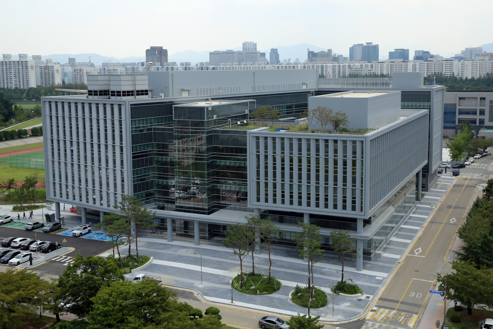

Executive Summary
"AI가 과학을 돕는가, 망치는가." 오래된 논쟁에 2026년 1월 Nature가 처음으로 4,130만 편 규모의 실증 답안을 올려놓았다. James Evans(University of Chicago Knowledge Lab)와 Yong Li(Tsinghua) 공동연구팀의 「Artificial intelligence tools expand scientists' impact but contract science's focus」(DOI: 10.1038/s41586-025-09922-y, Vol. 649, pp. 1237–1243)는 23년에 걸친 자연과학 6개 분야 — 생물·의학·화학·물리·재료·지질 — 논문을 BERT 기반 분류기(F1 = 0.875, 전문가 5인 Fleiss' Kappa 0.964)로 식별·매칭하여, AI 도입이 개인의 효용과 집단의 폭에 정반대 방향으로 작용함을 못 박았다. 단발 연구가 아니다. Evans Lab이 2015년 American Sociological Review 이래 11년간 추적해 온 "과학의 좁아짐" thesis의 정점이자, Park·Funk 2023 Nature, Messeri·Crockett 2024 Nature, Kleinberg·Raghavan 2021 PNAS로 이어지는 7년 메타-과학 합주의 한 악장이다.
개인의 승리: AI 활용 연구자는 동료 대비 논문 +3.02배, 인용 +4.84배를 누리고 프로젝트 리더로 1.37년 빠르게 부상한다. 집단의 손실: 같은 23년에 연구 주제 다양성은 -4.63%, 연구자 간 후속 참여(follow-on engagement)는 -22% 줄었다. 인용 집중 지니 계수(Gini coefficient)는 0.754 — 상위 22.20% 논문이 인용의 80%를 흡수하는 매튜 효과(Matthew effect)의 AI 시대 변형이다. Evans 본인의 말로 — "AI tools are expanding individual capabilities while contracting scientific attention", "AI concentrates attention on data-rich domains while leaving a growing number of potentially fruitful areas unexplored." 6분야 분석에 수학·이론물리·철학이 처음부터 빠져 있다는 사실 자체가, 데이터 빈약 영역이 분석 대상에서조차 누락된다는 메타-증거다.
이 역설은 정책의 시급한 의제다. Nature는 2026년 3월 25일 사설로 "AI scientists are changing research — institutions, funders and publishers must respond"를 띄웠고, 한국은 NRF AI+S&T 6대 분야(바이오·재료화학·지구과학·반도체·에너지·이차전지), 2026 AI Co-Scientist Challenge Korea(상금 19억원), 4개 과기원 이노코어(InnoCORE) 박사후 400명(연 9천만원) 사업을 잇따라 출범시켰다. 자금은 빠르지만 6대 분야 모두 데이터 풍부 영역이고, 다양성 보존 메커니즘은 부재하다. LG EXAONE Discovery가 4천만 물질을 1일에 검토하는 정점 사례 또한 같은 좌표에 서 있다. 페블러스는 이 구조적 공백을 정조준한다 — Evans가 직접 호명한 "sensory and experimental capacity"의 확장이 바로 DataGreenhouse(합성데이터)와 PebbloSim(시뮬레이션)이다. 4부작(Magnifica Humanitas · SkillOpt · MUSE-Autoskill · PIPEDA) 다음의 메타·과학사회학 좌표로서, 이번 글은 페블러스를 "데이터 진단·합성 기업"에서 과학 다양성 인프라 카테고리 리더로 격상한다. 더할 한 가지 액션 아이템 — DataClinic 7번째 신호 "지식 다양성".
한 논문이 그은 좌표를 정량으로 풀어 두면 역설의 결이 또렷해진다. 4,130만 편이라는 표본 위에 개인 ↑ 두 칸과 집단 ↓ 두 칸을 같은 화면에 놓으면, "둘 다, 그러나 반대 방향으로"라는 한 문장이 즉시 읽힌다.
출처: Hao, Xu, Li, Evans (2026), Nature 649, pp. 1237–1243. DOI: 10.1038/s41586-025-09922-y. arXiv:2412.07727v4.
+3.02배
개인 논문 생산
AI 활용 연구자 vs 동료
+4.84배
개인 인용 수
매튜 효과 가속
-4.63%
집단 주제 다양성
collective volume
-22%
연구자 후속 참여
"lonely crowds"
4,130만 편이 말하는 것
"AI가 과학을 돕는가, 망치는가." 이 논쟁은 새로운 게 아니다. AlphaFold 2가 단백질 폴딩을 사실상 해결했다는 2021년 Nature 논문 이래, 한쪽에서는 "AI 덕에 과학이 황금기에 진입했다"고 외쳤고 다른 한쪽에서는 "AI가 환각을 일으키고 연구의 깊이를 갉아먹는다"고 반박했다. 양쪽 모두 일화와 직관에 기댄 논쟁이었다. 2026년 1월, Nature Vol. 649, pp. 1237–1243에 게재된 한 논문이 그 자리에 처음으로 4,130만 편 규모의 실증 답안을 올려놓았다.
저자는 4인이다 — Qianyue Hao, Fengli Xu, Yong Li(Tsinghua University)와 James A. Evans(University of Chicago Knowledge Lab, 책임저자). Evans는 시카고대 사회학과 교수이자 Santa Fe Institute 외부 교수, 그리고 "Knowledge Lab"이라는 메타-과학 연구센터의 디렉터다. 그의 연구실은 2015년 American Sociological Review에 발표한 「Tradition and Innovation in Scientists' Research Strategies」 이래 11년 동안 한 가지 명제를 추적해 왔다 — 개인 합리성이 누적되면 집단 지식은 좁아질 수 있다. Evans 2026은 그 11년 thesis의 정점이다.

1.1방법론 한눈 — F1 0.875 분류기와 23년 시계열
결정문에 가까운 수치 하나가 이 논문의 무게를 가늠하게 해 준다. 연구팀은 자연과학 논문의 제목(최대 16 토큰)과 초록(최대 256 토큰)을 bert-base-uncased 2-stage fine-tuning 분류기로 처리하여 "AI 활용 연구"를 식별했다. 검증 단계에서 전문가 5인이 라벨을 매겼고 Fleiss' Kappa = 0.964(거의 완전 합의), 분류기의 F1 = 0.875가 보고됐다. 메타-과학 연구에서 이 정도 합의도와 정확도는 드물다. 23년 시계열은 AI의 세 시기 — 전통적 기계학습(1990s 후반~), 딥러닝(2012~), 생성형·대규모 언어 모델(2020~) — 을 자연스럽게 가른다.
분석 대상 분야는 여섯이다. biology, medicine, chemistry, physics, materials science, geology. 한국어로는 생물·의학·화학·물리·재료·지질. 한 가지 사실을 미리 못 박아 두자 — 수학·이론물리·철학은 처음부터 분석 대상에 들어 있지 않다. 이 사실은 이 논문의 메타-증거다. 데이터 빈약 영역은 가시화되기 전부터 분석 대상에서조차 누락된다. 5장에서 다시 돌아온다.
1.26 통계 한 문장으로 — 개인의 승리, 집단의 손실
결과는 abstract 한 단락에 압축되어 있다. 옮겨 적어 본다.
"Scientists who engage in AI-augmented research publish 3.02 times more papers, receive 4.84 times more citations, and become research project leaders 1.37 years earlier than those who do not. By contrast, AI adoption shrinks the collective volume of scientific topics studied by 4.63% and decreases scientist's engagement with one another by 22.00%."
— Hao, Xu, Li, Evans (2026), Abstract
같은 단락의 결론을 옮긴다 — "AI adoption in science presents a seeming paradox — an expansion of individual scientists' impact but a contraction in collective science's reach — as AI-augmented work moves collectively toward areas richest in data." 마지막 한 줄은 더 직설적이다 — "AI tools appear to automate established fields rather than explore new ones." 자동화될 수 있는 분야로 주의가 몰리고, 탐색되어야 할 분야는 더 외면된다. 본 글의 한 줄 요약은 이 두 문장의 한국어 번역에 가깝다 — 개인은 강해진다, 과학은 좁혀진다.
Evans 2026이 답한 것. "AI가 과학을 돕는가, 망치는가"의 답은 "둘 다, 그러나 반대 방향으로"이다. 개인 효용과 집단 다양성이 동시에 그러나 반대로 움직인다. 4,130만 편이라는 실증의 규모, F1 0.875·Fleiss κ 0.964라는 분류기 합의도, 23년이라는 시계열 길이 — 어느 하나만으로도 메타-과학 사적史的 좌표가 될 수치들이 한 논문에 모였다.
개인의 승리 — 3배·4.8배·1.4년
개인 차원의 세 숫자를 하나씩 읽는다. 각 숫자가 무엇을 의미하고, 왜 그 크기가 보고됐는지가 이어진 두 절의 주제다.
2.1+3.02배 논문 · +4.84배 인용 · -1.37년 리더십
+3.02배 논문 생산. AI 도구를 일상적으로 활용하는 연구자 한 명은, 동일 분야·동일 연차의 동료 한 명보다 약 3배 많은 논문을 같은 기간 안에 출간한다. 이 숫자가 단순한 "양"의 차이로 들릴 수 있으나, 학술 시장의 보상 구조(채용·승진·연구비)가 출판 건수를 일차 지표로 삼는 한, 3배는 곧 직업적 안정성의 3배 격차다.
+4.84배 인용 수. 더 많이 쓰는 것이 아니라 더 많이 인용된다는 점이 더 무겁다. 인용은 동료 평가의 누적이고, 그 누적이 다시 다음 논문의 인용을 끌어오는 자기-강화 루프(매튜 효과 — Merton 1968)에 들어간다. 4.84배는 단순 곱셈이 아니라 시간이 지날수록 격차가 더 벌어지는 구조의 시작점이다. 보충 자료의 보고에 따르면 인용 집중 지니 계수는 AI 활용 집단에서 0.754로, 비활용 집단의 0.690보다 의미 있게 높다. 상위 22.20%의 논문이 인용의 80%를 흡수한다 — AI 시대의 슈퍼스타 효과(superstar effect)다.
-1.37년 PI 부상. 가장 사회적으로 무거운 숫자가 이것일 수 있다. 박사후 연구원이 독립 책임연구자(Principal Investigator)로 부상하는 시점이 AI 활용 연구자에게서 1.37년 빨라진다. 학술 생애 주기에서 1년 4개월은 큰 격차다 — 연구비 신청 가능 시점, 첫 박사 지도 시점, 첫 종신직 트랙 진입 시점이 모두 그만큼 앞으로 당겨진다. 동료보다 1.37년 늦은 사람은 한 사이클이 늦는 셈이다.
2.2매칭 분석이 답한 한 질문 — selection이냐 effect냐
이런 차이를 보고 가장 먼저 묻게 되는 의심은 자연스럽다 — "그냥 더 똑똑하고 빠른 연구자가 AI를 먼저 도입한 것 아닌가?" 저자들도 같은 질문을 안고 분석을 설계했다. 인과 추론 단계에서 연구팀은 AI 도구를 채택한 연구자 11,019명을 추출하고, 초기 경력 궤적(연차·분야·생산성)이 통계적으로 유사한 비-채택자 1,926명을 매칭해 비교했다. year 10 시점에서 AI 채택자의 인용은 매칭된 비-채택자보다 +24.45% 많았다. 초기 동일 조건에서 출발했음에도 격차가 벌어진다는 점은, 격차의 상당 부분이 prior selection이 아닌 채택 자체의 효과임을 시사한다.
그러나 저자들도 솔직하게 한계를 인정한다 — "Despite consistently suggestive evidence, we cannot fully identify the causal linkage between AI adoption and scientific impact." 무작위 배정 실험이 아닌 관찰 데이터의 본질적 한계다. 정확한 인과 강도는 ±α의 폭이 있다. 그러나 11,019 vs 1,926 매칭의 +24.45%라는 추정치는 이 논문이 단순 상관에 머무는 평범한 bibliometric study가 아님을 분명히 한다.
2.3Wu·Wang·Evans 2019와의 합류 — 작은 팀이 disrupt하던 자리
Evans Lab의 이전 작업 한 편을 함께 읽으면 이번 논문의 무게가 다르게 느껴진다. Lingfei Wu, Dashun Wang, James A. Evans는 2019년 Nature에 「Large teams develop and small teams disrupt science and technology」를 게재했다. 6,500만 편 논문·특허를 분석한 결과 — 작은 팀일수록 disruptive한 연구를, 큰 팀일수록 incremental한 발전을 한다는 명제를 실증했다.
2019년의 그 명제 위에 2026년의 발견을 겹쳐 본다. AI 도구는 소수 연구자(작은 팀, 심지어 1인)에게도 큰 팀의 출력 규모를 가능하게 한다. 표면적으로는 "작은 팀이 더 disrupt할 수 있는 시대"가 도래해야 한다. 그런데 정작 관찰되는 것은 반대 방향이다 — AI 활용 작은 팀이 가는 자리는 데이터가 풍부한 인기 주제고, 그곳의 인용 자석에 빨려 들어간다. 작은 팀의 disrupt 잠재력이 AI에 의해 가속됐다기보다는, 작은 팀이 disrupt 대신 자동화에 더 매달리게 됐다는 해석이 자연스럽다. abstract 마지막 한 줄 — "AI tools appear to automate established fields rather than explore new ones" — 이 그 해석을 지지한다.

개인의 승리는 진짜다 — 그러나 그 승리가 곧 다음 절의 손실의 원인이다. 3배·4.8배·1.4년이라는 보상은 개별 연구자의 합리적 선택을 한 방향으로 몰아간다. 그 한 방향이 무엇인지가 §3과 §4의 주제다. 개인의 합리성이 누적되면 집단의 폭은 좁아질 수 있다 — Evans Lab 11년 thesis의 본문이 이 자리에서 시작된다.
집단의 손실 — 다양성·협업의 후퇴
집단 차원의 두 숫자 — 주제 다양성 -4.63%와 연구자 간 후속 참여 -22% — 는 표면적으로 작아 보일 수 있다. 그러나 두 숫자 모두 누적 신호이고, 분야 붕괴(field collapse)의 선행 지표로 읽을 근거가 분명하다.
3.1-4.63%는 어떻게 측정됐는가
주제 다양성은 단순 키워드 카운트가 아니라 주제 임베딩 공간에서의 collective volume of topics studied로 측정됐다. 풀어 쓰자면, 모든 논문을 의미 임베딩으로 매핑한 뒤 그 분포가 차지하는 부피의 변화를 본다. 같은 주제에 더 많은 논문이 몰리면 부피는 줄어들고, 새로운 주제로 흩어지면 부피는 늘어난다. 23년 시계열에서 AI 도입 비율이 높아지는 구간일수록 부피가 -4.63% 줄어든 것이 본 논문의 핵심 측정이다.
한 발 더 들어가면, 연구자 간 후속 참여(follow-on engagement) -22%가 더 빠른 신호다. 이 지표는 단순 공저자 수 감소가 아니다. 한 논문이 발표된 뒤 그 주제·방법에 다른 연구자들이 이어서 참여하는 정도 — 즉 학술 대화(scientific dialogue)의 강도다. 22% 감소는 인기 주제에 주의는 몰리되 그 주제 안에서 논문 간 상호작용은 줄어드는 상태를 가리킨다. 저자들은 이 상태를 "lonely crowds" — 외로운 군중 — 이라 이름 붙였다.
3.2"lonely crowds"가 가리키는 것
외로운 군중이라는 표현은 즉시적 직관을 부른다. 같은 카페에 100명이 앉아 있어도 서로 인사를 나누지 않으면 그것은 군집이지 공동체가 아니다. AI 시대의 인기 주제 위에서 일어나는 일이 정확히 이것이라는 진단이다. 같은 주제에 논문이 쏟아지지만, 그 논문들이 서로의 후속 작업을 인용·확장·반박하는 dialogue의 밀도는 떨어진다. 표면의 활기 아래에서 학술 공동체의 결이 풀린다.
세 가지 학술 명명이 동일한 현상을 가리킨다. Evans 2026의 "lonely crowds", Lisa Messeri와 M. J. Crockett이 2024년 Nature에 게재한 「Artificial intelligence and illusions of understanding in scientific research」의 과학적 단일문화(scientific monocultures), 그리고 Jon Kleinberg와 Manish Raghavan이 2021년 PNAS에 게재한 「Algorithmic monoculture and social welfare」의 알고리즘 단일문화(algorithmic monoculture). 세 명명이 가리키는 것은 동일하다 — 도구의 동일성이 사유의 동일성을 만들고, 개별 정확도는 오르지만 집단 의사결정의 다양성과 견고성은 떨어진다. 이번 글이 §4에서 한 박스에 묶어 인용하는 이유다.
3.3Park·Funk 2023과 Kang·Evans 2024의 합주
-4.63%가 "작은 숫자"가 아닌 이유는 두 동행 연구를 함께 보면 분명해진다. Michael Park, Erin Leahey, Russell J. Funk가 2023년 Nature에 게재한 「Papers and patents are becoming less disruptive over time」은 4,500만 편 논문과 390만 편 특허를 60년 시계열에서 분석하여 CD(Consolidate-Disrupt) Index가 점진적으로 하락하고 있음을 보였다. 이 추세는 AI 이전부터 시작됐다. Evans 2026이 보여주는 것은 그 추세가 AI에 의해 가속된다는 점이다.
그리고 결정적으로, Donghyun Kang과 James Evans가 2024년 Nature Human Behaviour에 게재한 「Limited diffusion of scientific knowledge forecasts collapse」가 한 줄로 못 박는다 — 지식 확산의 제한이 분야 붕괴를 예측한다. -4.63%는 통계적 잡음이 아니라 collapse의 선행 신호로 읽을 학술적 근거가 동일 저자에 의해 이미 출판된 셈이다. 협업 -22%는 그 선행 신호의 동시 지표다.
"AI research creates what the authors call 'lonely crowds' — popular topics that attract concentrated attention but with reduced interaction among papers."
— UChicago DSI press, 본문 용어 인용 (Hao·Xu·Li·Evans 2026)
다양성과 협업이 함께 후퇴한다는 것의 의미. -4.63%는 통계 충격이 아니라 분야 붕괴의 첫 균열로 읽혀야 한다. -22%는 그 균열이 어느 속도로 깊어지는지를 가리키는 동행 지표다. AI 이전부터 시작된 추세가 AI로 가속된다는 메타-과학의 합주가 Evans 2026·Park 2023·Kang 2024·Messeri 2024 네 편을 한 줄로 잇는다.
왜 데이터 풍부한 곳만 더 풍부해지는가
Evans 2026의 진짜 thesis가 한 인용에 압축되어 있다. 옮긴다 — "Data availability appears to be a major impacting factor, where areas with an abundance of data are increasingly and disproportionately amenable to AI research." 데이터 가용성이 결정적이라는 진단. AI가 잘하는 자리에 AI가 더 몰리고, AI가 잘하기 위해서는 충분한 데이터가 필요하며, 충분한 데이터가 이미 누적된 분야로 자원이 다시 쏠린다. 이 순환이 데이터 풍부 영역과 빈약 영역의 격차를 시간 함수로 벌린다.
4.1가로등 효과(streetlight effect)는 더 이상 비유가 아니다
과학사회학에서 오래된 비유가 하나 있다. 술 취한 사람이 열쇠를 잃어버리고는 가로등 아래에서만 찾는다. 왜냐고 묻자 "여기가 밝으니까"라고 답한다. 가로등 효과(streetlight effect)는 측정이 쉬운 곳에서만 탐색이 일어나는 편향을 가리키는 메타-과학 용어다. Julian Hoelzemann이 2024년 NBER Working Paper 32401 「The Streetlight Effect in Data-Driven Exploration」에서 이 효과를 정량화했다. AI 시대에 이 효과는 비유에서 측정 가능한 크기로 옮겨졌다 — 그 크기가 바로 Evans 2026이 보여 준 -4.63%와 -22%다.
가로등 효과가 작동하는 4개의 메커니즘 축을 짚어 본다.
- 인센티브 축 — 논문 건수와 인용 수가 채용·승진·연구비의 일차 지표인 한, 개인은 가장 빨리 많이 출판할 수 있는 자리를 합리적으로 선택한다. AI 도구의 효율 이득은 데이터 풍부 분야에서 극대화되므로 그 자리로 쏠림이 강화된다.
- 계산·데이터 비용 축 — 데이터 빈약 분야에서 LLM을 학습·미세조정하는 비용은 데이터 풍부 분야의 5~10배일 수 있다. 합성 데이터 보강이라는 길이 있으나 그 자체가 별도 인프라 투자다. 비용 곡선이 자원을 풍부 분야로 더 끌어당긴다.
- 평가 지표 축 — h-index, Altmetric, 인용 집중 지수 같은 평가 지표는 모두 누적적이다. 한 번 인기에 진입한 주제는 후속 인용을 더 받고, 그 인용이 다음 평가에 영향을 미친다. 매튜 효과의 도메인 수준 매튜 효과(domain-level Matthew effect) 변형이다.
- 동료심사·자금심사 축 — 심사위원이 AI 시대 패러다임에 익숙하지 않으면 빈약 분야의 새 제안은 채점이 낮게 매겨질 수 있다. Wang, Veugelers, Stephan이 2017년 Research Policy에 게재한 「Bias against novelty in science」가 정확히 이 신주제 패널티를 실증했다. AI 시대에 이 패널티는 더 강화될 가능성이 있다.
네 축이 따로 작동한다면 어느 한 정책 레버 — 평가 지표 개혁, 계산 비용 지원, 신주제 보조 트랙 — 로도 일부 해소할 수 있다. 그러나 4축은 서로를 강화한다. 인센티브가 풍부 분야로 몰리면 그 자리의 평가 지표가 더 누적되고, 누적된 지표는 다시 자금을 끌어오며, 그 자금이 계산 비용을 낮춰 다음 세대 연구자를 또 같은 자리로 부른다. 한 축만 풀어서는 다른 세 축이 잡아당기는 그림이다. 그래서 다음 절에서 보게 될 학술적 합주의 일치도가 의미를 갖는다 — 서로 다른 층위에서 본 세 명명이 같은 자리에 도착했다는 사실이, 이 4축 정렬이 임의가 아니라 구조적임을 가리킨다.
4.2"lonely crowds" = "scientific monocultures" = "algorithmic monoculture"
세 명명이 한 자리에 모이면 단일 연구가 아니라 학술적 합주임이 즉시 드러난다. 다음 박스가 그 합주의 한 화면이다.
lonely crowds
Evans 2026, Nature
인기 주제에 주의가 몰리되 논문 간 상호작용은 감소. 4,130만 편의 실증 좌표.
scientific monocultures
Messeri & Crockett 2024, Nature
AI가 방법·질문·시각의 단일문화를 만들어 다른 접근을 배제. 학술 인식론적 비판.
algorithmic monoculture
Kleinberg & Raghavan 2021, PNAS
동일 알고리즘 채택이 개별 정확도는 올리되 집단 의사결정 품질은 떨어뜨림.
세 연구가 같은 현상을 다른 층위에서 본다 — Evans는 학술 출판 데이터로, Messeri는 인식론·실험 설계 차원에서, Kleinberg는 알고리즘 채택·사회 후생 차원에서. 한 자리에 묶어 두면, 데이터 풍부 영역 쏠림이 단일 학자의 직관이 아니라 2021~2026 6년에 걸친 학술 공감대임이 드러난다. 정책 입안자가 "이건 한 명의 비관론자의 주장"으로 치부하기 어려운 단계에 들어선 셈이다.
4.3Gini 0.754 — AI 시대의 매튜 효과
Robert Merton이 1968년에 사회학 저널 Science에 발표한 매튜 효과(Matthew effect) — 가진 자에게 더 주어지고 가지지 못한 자에게서는 있는 것마저 빼앗긴다는 신약 마태복음 구절을 인용한 학술 명명 — 은 과학 인용 분포의 누적 우위(cumulative advantage)를 가리킨다. Evans 2026의 인용 집중 지니 계수 0.754는 매튜 효과의 AI 시대 변형이다. 비활용 집단의 Gini 0.690과 비교하면 0.064 포인트의 차이지만, Gini 척도에서 이 차이는 상위 22.20% 논문이 인용의 80%를 흡수하는 슈퍼스타 효과를 만든다.
매튜 효과의 도메인 수준 매튜 효과(domain-level Matthew effect) 변형은 한 가지 더 무겁다. 개별 논문 사이의 누적 우위가 아니라, 분야 사이의 누적 우위다. 이미 데이터·자금·인력이 누적된 분야가 AI 도구를 통해 더 많은 데이터·자금·인력을 끌어들이고, 빈약 분야는 상대적 거리에서 더 멀어진다. 이 차원의 매튜 효과는 분야 붕괴를 가속하는 구조적 압력이다.
가로등 효과는 측정된 사실이다. 4축 메커니즘(인센티브·계산 비용·평가 지표·동료심사)이 알고리즘 단일문화를 생산하고, 그 단일문화가 매튜 효과의 도메인 수준 변형을 가속한다. 세 학술 명명("lonely crowds" · "scientific monocultures" · "algorithmic monoculture")이 한 자리에 모인 것은 우연이 아니라 합주다. 정책이 응답해야 할 자리가 이 자리다.
과학의 모양이 바뀌고 있다
Evans 2026이 분석한 6개 분야 — 생물·의학·화학·물리·재료·지질 — 는 모두 데이터 풍부 영역이다. 이 사실 자체가 두 가지를 동시에 가리킨다. 첫째, 분석이 가능한 영역에서는 양극화가 측정 가능한 크기로 나타난다. 둘째, 측정되지 못한 영역은 더 빠르게 옅어지고 있을 가능성이 크다. 수학·이론물리·철학이 처음부터 분석 대상에 포함되지 않았다는 사실 자체가 데이터 빈약 영역 누락의 메타-증거다.
5.1NIH USD 30.1B vs NSF MPS USD 1.562B — 20배 격차의 정량
분야 자금의 정량 격차를 보면 가로등 효과가 자금 분포 차원에서도 측정 가능한 사실임이 분명해진다. 미국 기준 NIH(생물·의학) 연간 예산은 USD 30.1B다. 같은 기간 NSF MPS — Mathematical and Physical Sciences 디비전 — 의 FY2025 예산은 수학·물리·화학·재료·천문을 모두 통합해서 USD 1.562B다. 분야별로 풀면 격차는 더 벌어지지만, 통합 수치만 봐도 약 20배. AI for Science 도구는 NIH 자금을 받는 분야로 자연스럽게 쏠린다. 데이터·자금·도구의 세 축이 같은 방향으로 정렬된 셈이다.
arXiv 월간 신규 제출의 분야별 분포도 같은 그림을 그린다. 2024-10 기준 월 24,226편 신규 제출 중 cs.LG, cs.CV, cs.CL(기계학습·컴퓨터비전·자연어처리) 세 카테고리 합계가 6,000편을 넘는다. 같은 기간 순수수학(math.AG 등)과 이론물리(hep-th)는 정체 또는 미세 증가다. 학회의 발표 분포, 박사 학위 수여 분포, 교수 채용 분포 — 거의 모든 학술 흐름이 같은 방향으로 정렬되어 있다.
5.2분석에서조차 빠진 분야들 — 수학·이론물리·철학
다음 표가 Evans 2026이 본 분야와 보지 않은 분야의 비교다. "보지 않았다"는 것은 연구진의 결함이 아니라, 분석 가능한 데이터 자체의 비대칭을 가리킨다.
| 상태 | 분야 | 데이터·자금 특성 | AI for Science 정점 사례 |
|---|---|---|---|
| 분석 포함 | 생물 · 의학 | 대규모 시퀀스·이미지·임상 데이터, NIH USD 30B | AlphaFold 2 (Nature 2021) |
| 분석 포함 | 화학 | 반응 데이터베이스, 분자 구조 라이브러리 | Recursion, Insilico, Isomorphic Labs |
| 분석 포함 | 재료 | Materials Project, MP-API 누적 코퍼스 | GNoME (Nature 2023, 38만 안정 결정) |
| 분석 포함 | 물리(실험) · 지질 | 관측 데이터, 시뮬레이션 출력 | DESI, LSST 등 대형 관측 |
| 분석 제외 | 수학 | 증명·정의 텍스트, 라벨 코퍼스 희박, NSF MPS USD 1.5B | AlphaProof·AlphaGeometry (예외적 합성데이터 정면 돌파) |
| 분석 제외 | 이론물리 | 소량의 핵심 논문, 수식 중심 | 제한적 |
| 분석 제외 | 철학 · 일부 사회과학 | 개념·서사 중심, 정량 코퍼스 부재 | 사실상 없음 |
출처: Hao et al. 2026 분석 분야 본문, NIH FY2025 / NSF MPS FY2025 예산 공식 발표, arXiv stats(2024-10), DeepMind 발표 자료.
5.3AlphaProof의 예외성 — 빈약 영역 정면 돌파의 비용
AlphaFold 2가 생명과학에서 정점의 가속을 보여 줬다면, DeepMind의 AlphaProof와 AlphaGeometry는 수학에서 흥미로운 예외를 만들었다. 2024년 두 시스템이 결합해 IMO(국제수학올림피아드) 6문제 중 4문제를 풀어 은메달급 점수를 받았다. 이 사실은 두 가지를 동시에 가리킨다. 하나, AI는 데이터 빈약 분야에서도 정면 돌파가 가능하다. 둘, 그 정면 돌파는 막대한 양의 합성 증명 데이터(AlphaProof의 경우 1억 개 이상)를 생성해 빈약을 풍부로 인공적으로 전환한 결과다.
풀어 말하면 — 빈약 영역의 정면 돌파는 가능하지만, 그 비용은 풍부 영역에서의 단순 활용 비용을 훨씬 초과한다. DeepMind 규모의 인프라를 가지지 못한 학술 연구실이 같은 길을 가기는 어렵다. 결국 풍부 영역 쏠림의 구조적 압력은 그대로 남는다. 패러다임 전환(paradigm shift)이라는 Kuhn의 오래된 개념을 빌리면, AI 시대에 패러다임 전환 사이클은 일부 풍부 분야에서는 가속되고 빈약 분야에서는 둔화될 가능성이 크다. 분야 사이의 시간 흐름이 비대칭이 된다.

과학의 모양이 데이터 풍부 6분야로 깊어지고, 수학·이론물리·철학에서는 옅어진다. Evans 2026 분석에서 후자가 빠진 것은 우연이 아니라 데이터·자금·도구·평가의 4축 정렬이 만든 구조적 누락이다. AlphaProof 같은 예외가 가능함을 인정하되, 그 예외의 비용 곡선이 다음 절(§7)에서 페블러스의 합성 데이터·시뮬레이션 인프라가 들어설 자리를 정확히 가리킨다.
AI 거버넌스 5부작 — 도덕·학술·법·메타
페블러스가 2026년 5월에 연속으로 출간한 네 편의 글은 한 시리즈를 그린다. 이번 글이 다섯 번째 좌표다. 5부작 전체의 진화 곡선은 도덕(원칙) → 학술(옵티마이저) → 학술(lifecycle) → 법(집행) → 메타(과학 자체의 모양 변화)다. 1~4가 거버넌스의 안에서였다면, 5번째는 그 위 — AI가 과학을 어떻게 다스리는가의 거울이다.
| # | 제목 (한 줄) | 트랙 | 발행 |
|---|---|---|---|
| 1 | Magnifica Humanitas — 교황청 AI 헌장 | 도덕 · 신학 | 2026-05-25 |
| 2 | SkillOpt — 자가진화 옵티마이저 | 학술 · 옵티마이저 | 2026-05-27 |
| 3 | MUSE-Autoskill — 스킬 5단계 lifecycle | 학술 · lifecycle | 2026-05-28 |
| 4 | PIPEDA — 캐나다 AI 훈련 데이터 규제 실집행 | 법 · 규제 | 2026-05-29 |
| 5 | 이번 글 — Evans Nature 2026 메타비판 | 메타 · 과학사회학 | 2026-05-31 |
출처: 페블러스 블로그 발행 기록.
6.1Nature 사설이 호명한 3축 — institutions · funders · publishers
Evans 2026이 발표된 지 2개월만인 2026년 3월 25일, Nature는 사설로 응답했다 — "AI scientists are changing research — institutions, funders and publishers must respond"(DOI: 10.1038/d41586-026-00934-w). 이 사설은 한 논문이 학술 의제에서 정책 의제로 격상되는 드문 사건이다. 사설은 책임을 세 축에 분배한다 — 기관(institutions)은 평가 지표를 다시 설계해야 하고, 자금 기관(funders)은 빈약 분야 보존 트랙을 만들어야 하며, 출판사(publishers)는 AI 활용 투명성과 메타-데이터 표준을 정비해야 한다.
이어진 후속 사설 "AI grant flood must prioritize fairness as part of excellence"는 자금 분배에서 우수성(excellence)이라는 단일 기준 위에 공정성(fairness)이라는 두 번째 차원을 더해야 한다고 못 박았다. 우수성만으로 평가하면 데이터 풍부 분야가 모든 자금을 가져가는 구조적 결과가 따라온다. 공정성을 보조 차원으로 두지 않으면 다양성 후퇴는 가속된다. 정책 언어로 옮긴 Evans 명제다.
6.24부작이 그린 안과 5번째가 그리는 위
4부작의 4편을 한 줄로 묶어 본다. Magnifica Humanitas는 AI 시대 인간 존엄의 원칙을 묻는다. SkillOpt는 AI 에이전트의 자가진화 옵티마이저 학술 설계를 본다. MUSE-Autoskill은 스킬의 lifecycle 학술 모델을 제시한다. PIPEDA는 캐나다 4 위원회의 OpenAI 학습 데이터 규제 실집행을 다룬다. 도덕이 묻고 학술이 답하고 법이 강제하는 흐름이다.
이번 글은 그 흐름의 위에 한 좌표를 더한다. AI가 과학 자체의 모양을 어떻게 바꾸는가라는 메타 시야. 도덕·학술·법이 거버넌스의 안에서 작동하는 동안, 그 거버넌스가 다스리는 대상인 과학 자체가 좁아지고 있다는 사실. 5부작은 거버넌스의 안과 거버넌스가 다스리는 대상의 변형을 함께 본다는 점에서 한 시리즈를 완성한다.
5부작이 완성하는 거버넌스 지형. 도덕(원칙) · 학술(옵티마이저) · 학술(lifecycle) · 법(집행) · 메타(과학의 모양). 어느 한 좌표만 풀어도 부분적이지만, 다섯 좌표가 함께 모이면 AI 거버넌스가 어디서부터 어디까지 작동해야 하는지의 한 그림이 보인다. 페블러스의 다음 글들이 시작될 자리도 이 그림 안에서 자연스럽게 가시화된다.
데이터 빈약 영역 복원 — 페블러스 관점
Evans 2026이 학술 합주의 한 악장이라면, 페블러스의 좌표는 그 합주 위에 더할 한 인프라 한 줄이다. Evans 본인이 정책 함의로 직접 한 문장을 남겼다. 옮긴다.
"To preserve collective exploration in an era of AI use, we will need to reimagine AI systems that expand not only cognitive capacity but also sensory and experimental capacity."
— James Evans, UChicago DSI press (Hao·Xu·Li·Evans 2026 정책 함의)
한국어로 옮기면 — "AI 시대에 집단적 탐색을 보존하려면, 인지 능력만이 아니라 감각·실험 능력까지 확장하는 AI 시스템을 재상상해야 한다." 페블러스는 이 한 문장을 직접적인 학술적 정당화로 받는다. DataGreenhouse가 감각의 확장(빈약 분야 합성 데이터 공급)이고, PebbloSim이 실험의 확장(시뮬레이션을 통한 실험 비용·사각지대 보강)이다. Evans의 정책 함의가 페블러스 제품 라인의 학술적 좌표를 정확히 짚는다.
7.1DataClinic 7번째 신호 — "지식 다양성"
DataClinic은 지금까지 6개의 데이터 품질 신호로 데이터셋 내부 품질을 진단해 왔다 — 완전성(completeness) · 정확성(accuracy) · 일관성(consistency) · 시의성(timeliness) · 고유성(uniqueness) · 합법성(legality). 마지막 합법성은 4부작 4편 PIPEDA 글에서 추가된 6번째 신호다. 이번 글은 한 신호를 더 제안한다 — 지식 다양성(Knowledge Diversity)이라는 7번째 신호.
기존 6신호는 데이터셋 내부의 품질을 본다. 7번째 신호는 데이터셋 외부를 본다 — 어느 분야가 빠져 있는가를. 다음 박스가 운영적 정의의 첫 그림이다.
| # | 신호 | 관점 | 측정 예시 |
|---|---|---|---|
| 1 | 완전성 | 데이터셋 내부 | 결측률, 필드 채움률 |
| 2 | 정확성 | 데이터셋 내부 | 라벨 오류율, 검증 일치도 |
| 3 | 일관성 | 데이터셋 내부 | 중복 정의 충돌, 스키마 일치 |
| 4 | 시의성 | 데이터셋 내부 | 최신 업데이트 시점, 드리프트 |
| 5 | 고유성 | 데이터셋 내부 | 중복 레코드 비율 |
| 6 | 합법성 | 데이터셋 외부 — 법 | 동의 유효성, 출처 추적성 (PIPEDA 글) |
| 7 | 지식 다양성 | 데이터셋 외부 — 분야 | 분야 임베딩 커버리지, Gini 임계치, "lonely cluster" 점수 |
출처: 페블러스 DataClinic 기존 6신호 + 본 글 신규 제안 7번째 신호.
7번째 신호의 운영적 정의를 풀어 본다. 측정은 분야 임베딩 공간에서 학습 코퍼스의 커버리지 분포를 계산하고, 인접 빈약 영역과의 거리·균등도를 측정한다. 신호는 Gini 임계치(예: 0.7 초과 시 경고), 분야 누락률(NSF/NIH 분류 기준), "lonely cluster" 점수(인접 클러스터와의 연결 강도)다. 적용은 AI 모델 학습 전 코퍼스 진단 단계에 들어가, 빈약 영역의 합성 데이터 보강을 권고하는 단계로 이어진다. DataGreenhouse가 그 보강의 실행 도구가 된다.
7.2한국 AI4Science 정책의 다양성 메커니즘 공백
한국 AI4Science 정책은 빠르고 야심차다. 그러나 다양성 메커니즘은 부재하다는 진단이 가능하다. 2026년 정부 R&D 35.5조원(전년 대비 +19.9%) 중 AI 예산 10.1조원, 그 안에서 "AI 활용 과학기술 연구개발 혁신" 직접 항목이 6,000억원이다. NRF AI+S&T 6대 분야는 — 바이오·재료화학·지구과학·반도체·에너지·이차전지 — 모두 데이터 풍부 영역이다. 2026 AI Co-Scientist Challenge Korea(상금 19억원) Track 1에 수학이 포함된 것은 작은 진전이지만, 평가 기준에 다양성 지표는 없다.
가장 큰 변수는 4개 과기원의 이노코어(InnoCORE) 박사후 400명 사업이다. KAIST 단독 200명을 포함해 연봉 9천만원 트랙으로 운영된다. 이 400명이 어느 분야로 흘러가는지가 향후 5~10년 한국 과학의 모양을 결정한다. 6대 분야가 모두 데이터 풍부 영역인 채로 400명이 같은 자리로 쏠리면, Evans 2026이 미국에서 측정한 -4.63%·-22%의 한국판이 한국에서 측정될 가능성이 크다.

산업 차원에서는 LG AI연구원의 EXAONE Discovery가 정점 사례다. 4천만 종의 물질을 1일에 검토할 수 있는 AI 시스템으로, 신소재·신약 개발 자동화의 한국 정점이다. 데이터 풍부 분야 자동화의 정점에 EXAONE Discovery가 섰다는 사실은 박수받을 일이다. 동시에, 그 자동화가 다루지 못하는 빈약 영역의 인프라가 누구의 책임으로 어디서 만들어지는지가 빈 자리로 남는다. 페블러스가 그 빈 자리의 한 좌표에 설 수 있다.
7.3"과학 다양성 인프라"라는 신규 카테고리
페블러스가 이번 글로 그리는 정체성은 한 줄로 옮길 수 있다 — 과학 다양성 인프라(Scientific Diversity Infrastructure). 데이터 진단(DataClinic) · 합성(DataGreenhouse) · 시뮬레이션(PebbloSim)의 3단이 단순 제품 사업이 아니라, Evans·Park·Messeri·Kleinberg가 그려 온 학술 합주에 합류하는 인프라 사업자 정체성으로 격상된다. 자동 연구 에이전트(Sakana AI Scientist v2, Google Co-Scientist, FutureHouse Crow/Falcon/Owl/Phoenix, LG EXAONE Discovery) 레이스에 같은 트랙으로 합류하지 않는다. 그 에이전트들이 학습할 데이터를 빈약 영역에 공급하는 한 층 아래의 인프라 레이어가 페블러스의 좌표다.
자매 글 한 편을 함께 읽기를 권한다. AI Science New Era는 AI for Science의 새 시대 도래를 산업·정책 관점에서 그렸다. 이번 글이 메타·과학사회학 관점에서 그 시대의 그림자를 짚었다면, 자매 글은 같은 시대의 빛 쪽을 본다. 한 시대를 양쪽에서 함께 보는 두 좌표가 페블러스 시리즈에 자연스럽게 자리 잡는다.
Evans의 한 문장이 페블러스의 학술적 좌표를 정확히 짚었다. "sensory and experimental capacity의 확장"이 곧 DataGreenhouse·PebbloSim의 정당화다. DataClinic은 진단의 단계, DataGreenhouse는 보강의 단계, PebbloSim은 시뮬레이션의 단계 — 이 3단이 곧 과학 다양성 인프라의 한 그림이다. DataClinic의 7번째 신호 "지식 다양성"이 이번 글의 한 가지 액션 아이템이다.
가속과 좁아짐을 함께 사는 시대
4,130만 편이라는 표본 위에 +3.02배와 -4.63%가 같은 화면에 떠 있다는 사실 — 이것이 이번 글이 끝맺어야 할 자리다. 개인의 가속과 집단의 좁아짐이 같은 시대의 두 얼굴이다. 어느 한쪽만 선택할 수 있는 선택지가 아니라, 둘을 함께 살아내야 하는 시대가 시작됐다는 사실의 확인이다.
한 가지 솔직한 인정이 필요하다. AlphaFold 2가 단백질 폴딩에 가져다 준 가속은 진짜다. GNoME가 38만 종의 안정 무기 결정을 발견한 것은 인류 과학사의 한 칸이다. AlphaProof·AlphaGeometry가 IMO 은메달급 수학 추론을 보여 준 것은 빈약 영역의 정면 돌파가 가능함을 증명했다. 자동 연구 에이전트의 시대도 빠르게 다가오고 있다. 가속을 폄하할 필요는 없다. 그러나 가속만 본 시야는 -4.63%와 -22%를 놓친다. 가속과 좁아짐 둘 다를 보는 시야가 필요하다.
Evans가 정책 함의로 남긴 한 문장을 다시 읽어 본다 — "reimagine AI systems that expand not only cognitive capacity but also sensory and experimental capacity." 인지의 확장만이 아니라 감각·실험의 확장. 이 한 줄이 다음 시대의 한 가지 설계 원칙이다. AI가 자동화할 수 있는 자리에서 자동화의 가속을 누리되, AI가 잘 다루지 못하는 자리에 합성 데이터와 시뮬레이션과 다양성 진단의 인프라를 깐다. 두 가지가 동시에 진행되어야 가속과 좁아짐을 함께 사는 시대의 균형이 가능하다.
이번 글이 끝나는 자리에서 다음 질문들이 시작된다. DataClinic 7번째 신호 "지식 다양성"의 측정 도구를 어떻게 구체화할 것인가. DataGreenhouse가 우선 보강해야 할 빈약 분야의 우선순위는 어떻게 정할 것인가. 이노코어 박사후 400명의 분야 분포를 다양성 차원에서 어떻게 모니터링할 것인가. NRF AI+S&T 6대 분야의 다음 차수에 빈약 영역 트랙이 어떻게 추가될 수 있는가. 이 질문들은 한 편의 글이 답할 수 있는 범위를 넘는다. 페블러스가 다음 글들에서 천천히 풀어 갈 자리다.
네 명의 학자가 4,130만 편 위에 그은 한 좌표가 한 시대의 결을 보여 줬다. 개인은 강해진다, 과학은 좁혀진다. 두 명제가 동시에 참이라는 사실의 확인이 이번 글의 시작이자, 페블러스의 다음 작업의 출발선이다. 과학 다양성도 진단 대상이다 — 그리고 그 진단 위에 보강과 시뮬레이션의 인프라가 따라온다. 한 줄이 이번 글의 끝이자 5부작의 한 매듭이다.
시리즈 안내 — 페블러스 AI 거버넌스 5부작
이번 글은 페블러스 AI 거버넌스 5부작의 다섯 번째 좌표(메타 · 과학사회학)입니다. 도덕 → 학술 → 학술 → 법 → 메타의 다섯 좌표가 AI 거버넌스의 전체 지형을 그립니다.
- ① Magnifica Humanitas — 도덕 · 신학 (2026-05-25)
- ② SkillOpt — 학술 · 옵티마이저 (2026-05-27)
- ③ MUSE-Autoskill — 학술 · lifecycle (2026-05-28)
- ④ PIPEDA — 법 · 규제 실집행 (2026-05-29)
- ⑤ 이번 글 — 메타 · 과학사회학 (2026-05-31)
자매 글 — AI Science New Era (AI for Science 산업·정책 관점).
참고문헌
이번 글이 인용한 1차 출처(Evans 2026 Nature 본문), Evans Lab 11년 선행 연구 계보, Park·Messeri·Kleinberg·Hoelzemann 메타-과학 합주, AI for Science 도구 진영, Nature 사설, 한국·글로벌 정책 자료, 페블러스 5부작 시리즈를 출처별로 묶었다.
1차 출처
- 1.Hao, Q., Xu, F., Li, Y., & Evans, J. A. (2026). Artificial intelligence tools expand scientists' impact but contract science's focus. Nature, 649, 1237–1243. DOI: 10.1038/s41586-025-09922-y. arXiv:2412.07727v4.
Evans Lab 선행 (학술 계보)
- 2.Foster, J. G., Rzhetsky, A., & Evans, J. A. (2015). Tradition and Innovation in Scientists' Research Strategies. American Sociological Review, 80(5), 875–908.
- 3.Wu, L., Wang, D., & Evans, J. A. (2019). Large teams develop and small teams disrupt science and technology. Nature, 566, 378–382. DOI: 10.1038/s41586-019-0941-9.
- 4.Shi, F., & Evans, J. A. (2023). Surprising combinations of research contents and contexts are related to impact and emerge with collaboration. Nature Communications.
- 5.Kang, D., Danziger, R. S., Rehman, J., & Evans, J. A. (2024). Limited diffusion of scientific knowledge forecasts collapse. Nature Human Behaviour.
메타-과학 합주
- 6.Park, M., Leahey, E., & Funk, R. J. (2023). Papers and patents are becoming less disruptive over time. Nature, 613, 138–144. DOI: 10.1038/s41586-022-05543-x.
- 7.Wang, J., Veugelers, R., & Stephan, P. (2017). Bias against novelty in science: A cautionary tale for users of bibliometric indicators. Research Policy, 46(8), 1416–1436. DOI: 10.1016/j.respol.2017.06.006.
- 8.Messeri, L., & Crockett, M. J. (2024). Artificial intelligence and illusions of understanding in scientific research. Nature, 627, 49–58. DOI: 10.1038/s41586-024-07146-0.
- 9.Kleinberg, J., & Raghavan, M. (2021). Algorithmic monoculture and social welfare. PNAS, 118(22), e2018340118. DOI: 10.1073/pnas.2018340118.
- 10.Hoelzemann, J., et al. (2024). The Streetlight Effect in Data-Driven Exploration. NBER Working Paper 32401.
- 11.Merton, R. K. (1968). The Matthew Effect in Science. Science, 159(3810), 56–63.
AI for Science 도구 · 옹호 진영
- 12.Jumper, J., Evans, R., Pritzel, A., et al. (2021). Highly accurate protein structure prediction with AlphaFold. Nature, 596, 583–589. DOI: 10.1038/s41586-021-03819-2.
- 13.Merchant, A., Batzner, S., Schoenholz, S. S., Aykol, M., Cheon, G., & Cubuk, E. D. (2023). Scaling deep learning for materials discovery (GNoME). Nature, 624, 80–85. DOI: 10.1038/s41586-023-06735-9.
- 14.Lu, C., et al. (2024). The AI Scientist: Towards Fully Automated Open-Ended Scientific Discovery. arXiv:2408.06292.
- 15.Yuan, Y., et al. (Sakana AI, 2025). The AI Scientist-v2: Workshop-Level Automated Scientific Discovery via Agentic Tree Search. arXiv:2504.08066.
- 16.Chen, Z., et al. (2024). ScienceAgentBench: Toward Rigorous Assessment of Language Agents for Data-Driven Scientific Discovery. ICLR 2025. arXiv:2410.05080.
- 17.Bommasani, R., Klyman, K., Longpre, S., et al. (2024). The 2024 Foundation Model Transparency Index v1.1. Stanford CRFM. arXiv:2407.12929.
Nature 사설 · 보도
- 18.Nature Editorial. (2026, March 25). AI scientists are changing research — institutions, funders and publishers must respond. Nature. DOI: 10.1038/d41586-026-00934-w.
- 19.Nature Editorial. (2026). Responses to the AI grant flood must prioritize fairness as part of excellence. Nature. DOI: 10.1038/d41586-026-01422-x.
- 20.Science (AAAS). (2026, January). AI has supercharged scientists — but may have shrunk science.
한국 정책 · 자금
- 21.한국연구재단(NRF). (2025). 2026년 상반기 AI+S&T 혁신 기술개발(R&D) 기술수요조사.
- 22.과학기술정보통신부. (2025). 2026 AI Co-Scientist Challenge Korea. 상금 19억원.
- 23.KAIST 뉴스. (2025). AI 융합 혁신 주도할 「이노코어(InnoCORE) 연구단」 본격 출범. 박사후 400명, 연 9천만원.
- 24.MIT Tech Review Korea. (2025). LG AI연구원, 신소재·신약 개발 AI 핵심 프로세스 특허 등록 (EXAONE Discovery).
- 25.KISTEP. (2025). 2026 정부 R&D 예산 35.5조원 (+19.9% YoY).
글로벌 정책 · 인프라
- 26.NIH Common Fund. Bridge2AI Program.
- 27.NSF. (2025). $100M investment in National AI Research Institutes.
- 28.European Commission. (2025-10-08). Keeping European industry and science at the forefront of AI.
- 29.Google DeepMind. (2025). Co-Scientist: A multi-agent AI partner to accelerate research.
- 30.FutureHouse. (2025-05-01). Launching FutureHouse Platform: Superintelligent AI Agents for Scientific Discovery.
연구자 설문 · 시장
- 31.Wiley. (2025). ExplanAItions 2025: The Evolution of AI in Research (2,430 researchers, AI 사용률 84%).
- 32.Nature. (2025-05). 5,000-researcher survey on AI writing. Nature, 641. DOI: 10.1038/d41586-025-01463-8.
페블러스 AI 거버넌스 5부작 시리즈
- 33.페블러스 (2026-05-25). Magnifica Humanitas — AI 시대의 인간 존엄. 5부작 1편 · 도덕 · 신학.
- 34.페블러스 (2026-05-27). 스킬 문서가 학습하기 시작했다 — Microsoft SkillOpt 심층 분석. 5부작 2편 · 학술 · 옵티마이저.
- 35.페블러스 (2026-05-28). 스킬도 경험을 누적한다 — MUSE-Autoskill 5단계 lifecycle. 5부작 3편 · 학술 · lifecycle.
- 36.페블러스 (2026-05-29). 사후 동의는 불가능하다 — 캐나다 PIPEDA Findings #2026-002. 5부작 4편 · 법 · 규제 실집행.
- 37.페블러스 (2026). AI Science New Era. 자매 글 · AI for Science 산업 · 정책 관점.